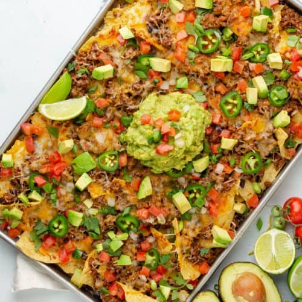

Pulled pork nachos

Nacho regular appetizer
The perfect snack to share with your friends!
Ingredients
- 1 bag of tortilla chips
- 500g shredded cheese for melting
- 400g pre-seasoned pulled pork
- 1 medium tomato
- 0.25 lettuce
- 0.5 bell pepper
- 0.5 red onion
- 0.3 cup of sliced olives
- 1-2 jalapeño or banana peppers
- Sour cream
- Salsa
Steps
- Cook the pulled pork according to the instructions on its packaging.
- While the pulled pork is cooking, preheat oven to 400°F (200°C).
- Chop your toppings: the tomato, the lettuce, the bell pepper, the onion and the jalapeño or banana peppers.
- Line an oven baking sheet with parchment paper and spread the tortilla chips over it.
- Pull apart the pulled pork.
- Layer half the cheese over the tortilla chips, then the pulled pork, and top with the rest of the cheese. This distribution will ensure cheesiness all over.
- Bake the loaded tortilla chips for five minutes.
- Wait five minutes for the nachos to cool down, and then cover with all the toppings you prepared on step 3, plus the sliced olives.
- Serve with sour cream, salsa and maybe some of that guac you made earlier.